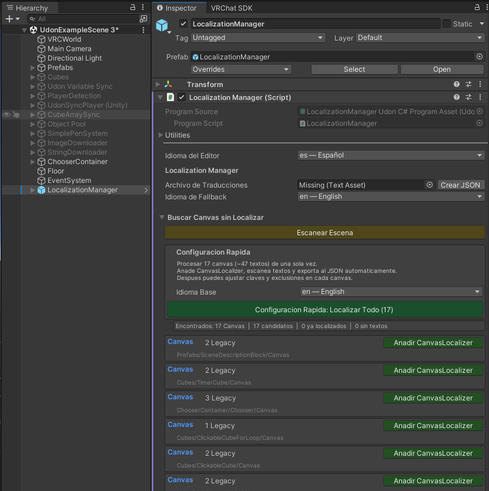
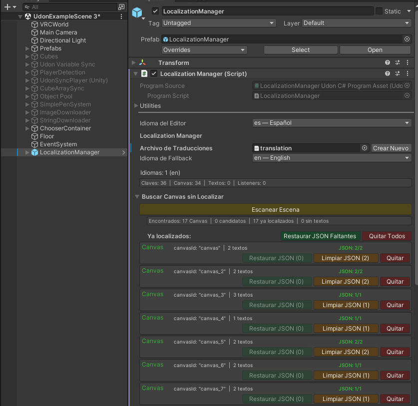
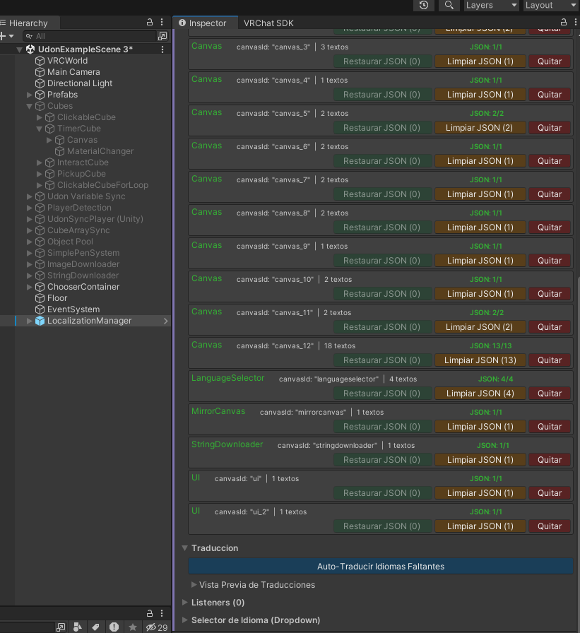

Flujo Automatico
Localiza todos tus Canvas con unos pocos clics usando la Configuracion Rapida
Paso 1: Coloca el LocalizationManager en tu escena
Arrastra el prefab LocalizationManager.prefab a la raiz de tu escena. Lo encuentras en: Packages/com.benderdios.idiomas/Prefabs/LocalizationManager.prefab. Solo necesitas uno por mundo.

El prefab incluye un Canvas con un dropdown de seleccion de idioma ya configurado. Si no quieres el dropdown todavia, puedes ocultarlo y añadirlo mas adelante.
Paso 2: Elige con que idiomas vas a trabajar
Selecciona el LocalizationManager en la jerarquia. En el inspector veras la lista de idiomas soportados. Marca los idiomas a los que quieres traducir tu mundo y elige el Idioma Fallback (el que se usara cuando un jugador tenga un idioma que no esta en tu archivo).

Paso 3: Escanea la escena
Pulsa el boton "Escanear Escena". La herramienta recorre tu mundo y te muestra una lista de todos los Canvas que contienen textos. Todavia no ha modificado nada — es solo una vista previa para que veas que va a tocar.
Paso 4: Elige el idioma base comun y pulsa "Configuracion Rapida"
Justo encima del boton hay un desplegable de Idioma base. Elige el idioma en el que actualmente estan escritos los textos de tus Canvas (ejemplo: si escribiste todo en español, elige Español).

Pulsa "Configuracion Rapida". Con un solo clic la herramienta:
- Añade un componente CanvasLocalizer a cada Canvas detectado.
- Escanea los textos de cada Canvas de forma individual.
- Ignora automaticamente los textos que son solo numeros, signos o simbolos (no tiene sentido traducir
"123"o"%"). - Genera claves unicas para cada texto traducible.
- Crea el archivo
Assets/Idiomas_Data/translation.jsony lo rellena con todas las claves en el idioma base.

Paso 5: Auto-traducir a los demas idiomas
Baja en el inspector hasta la seccion "Traduccion" y pulsa "Auto-Traducir Idiomas Faltantes". Se abrira una ventana con el numero de textos que hay que traducir a cada idioma que marcaste.

La herramienta usa dos servicios gratuitos, en orden:
- MyMemory (principal) — hasta 5.000 palabras al dia sin registro.
- Lingva (respaldo) — se usa automaticamente si MyMemory falla o se agota el limite diario.
Pulsa "Traducir X textos con MyMemory". Veras el progreso de cada idioma mientras se traducen los textos.

Paso 6: Revisar y guardar al JSON
Cuando termine, revisa las traducciones propuestas. Puedes editarlas directamente en la tabla antes de guardar (util si una traduccion automatica no te convence). Cuando estes contento, pulsa "Guardar al JSON".

□) en el editor de Unity. Esto es normal — en VRChat se renderizan correctamente gracias a las fuentes Noto Sans incluidas en el cliente.
Consejos importantes antes de publicar
Antes de subir tu mundo a VRChat, ten en cuenta estos puntos para que se vea bien en todos los idiomas:
- Usa TextMeshPro (TMP), no Legacy Text. La herramienta soporta los dos, pero TMP maneja mejor los acentos, los caracteres CJK y el rich text. Si tienes textos Legacy, considera convertirlos.
- Deja espacio extra en tus Canvas. El aleman puede ser un 40 % mas largo que el ingles, mientras que el japones suele ser mas corto. Diseña los cuadros con margen holgado y activa Auto Size en los TextMeshPro para que el texto se ajuste solo.
- Cuidado con las fuentes para idiomas CJK. Las fuentes latinas estandar no tienen caracteres chinos, japoneses ni coreanos. VRChat carga Noto Sans como respaldo, pero si usas una fuente propia, asegurate de añadir los atlas CJK o tus textos apareceran como cuadros
□□□. - Puedes editar el archivo JSON a mano. Se guarda en
Assets/Idiomas_Data/translation.json. Si una traduccion automatica no te gusta, abrelo con cualquier editor de texto y cambiala directamente. - Puedes tener varios archivos de traduccion. Util si quieres versiones distintas del mundo (eventos especiales) o separar textos de UI y subtitulos. Apunta el LocalizationManager al archivo que quieras cargar.
- Si modificas un texto en un Canvas despues de configurarlo, vuelve a escanear ese Canvas para que la herramienta detecte el cambio.
Resultado
Despues de estos 6 pasos, tu mundo tiene:
- Todos los Canvas localizados automaticamente
- Un archivo JSON con traducciones en los idiomas que elegiste
- Deteccion automatica del idioma del jugador al entrar al mundo
- Un dropdown para que el jugador cambie idioma manualmente
- Todo funcional tanto en el editor de Unity como en VRChat